Print, Card ID, versão, raridade e estilos de ataque e defesa. Conflitos continuam visíveis.
eFOOTBALL 2027 · POSSE CENTRAL · SCOUT DE PERFORMANCE
CADA CARTA.
SEU MELHOR JOGO.
246 cartas com suas imagens e 246 pareceres por posição, estilo, habilidades e ímpetos. Treino manual com PP conferidos, cenários testáveis e alertas de dados pendentes. Não buscamos Overall.
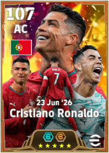
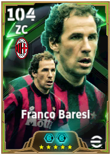
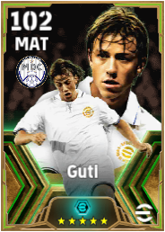
META GAMEPLAY · NÃO OVERALL246cartas
catalogadas
catalogadas
246imagens
originais
originais
162treinos A + B
calculados
calculados
14atributos-base
conferidos
conferidos
NOVO • V68 · SCOUT ENGINE
Método competitivo aplicado a todas as 246 cartas
Cada ficha distingue posição original e função, compara cenários de PP válidos, verifica habilidades e slots de ímpeto e recomenda testes de gameplay. A ficha não finge conhecer atributos-base, slots preenchidos ou resultados não fornecidos.
246 análises individuais162 com PP calculáveis14 com atributos-base parciais
SCOUT PRO • 2027
Como avaliamos cada carta
O vídeo enviado pelo usuário orienta a observar a posição real, o desenvolvimento manual, o efeito dos ímpetos e as variações de uso. Não reproduzimos opiniões não documentadas de Rentão ou Blackjhon.
Custos de PP exatos por faixa. Comparamos variantes sem subir Overall artificialmente.
Separação de habilidades nativas, sugestões e slots ainda não escolhidos.
Um teste por variável: dominar, defender, tabelar, infiltrar e finalizar conforme a função.
162 fichas com distribuição calculável · 14 com atributos-base para subtotais · 84 sem PP seguros · todas com diagnóstico tático e pendências explicitadas.
SUA COLEÇÃO · CAPTURAS REAIS
Biblioteca de jogadores
Pesquise, filtre e abra a carta individual.
Exibindo 30 de 246 cartasToque na carta para abrir a ficha →
#001ÉPICA
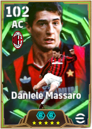
CA · Matador
Daniele Massaro
Epic — AC Milan 91-92 (distribuída no Legends Assemble, Jul 2026)
62 PP● PP calculadoTreino P · função
#002ÉPICA
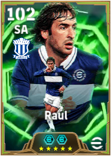
SA · Arrastar Defesa
Atributos-base cadastrados • Laboratório CRaúl
Epic — Schalke BW 10-11 (14 Aug 2025)
64 PP● Base verificadaTreino A · atributos
#003SHOW TIME
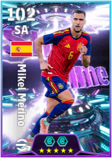
SA · Criador de Espaços
Mikel Merino
Show Time — The Football Festival Campaign 2026 (25 Jun 2026)
64 PP● PP calculadoTreino B · função
#004ÉPICA
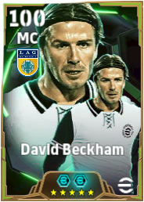
MLG · Orquestrador
David Beckham
Epic — Madrid Chamartin B 03-04
64 PP● PP calculadoTreino B · função
#005ÉPICA
MLG · Todo o Terreno
Steven Gerrard
Epic — England 2006 (4 Jun 2026)
62 PP● PP calculadoTreino A · função
#006DISTINGUIDO
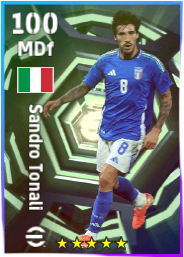
VOL · Trinco
Sandro Tonali
Highlight — National Team Selection Italy 1 Sep '25 (28 Aug 2025)
68 PP● PP calculadoTreino P · função
#007DISTINGUIDO
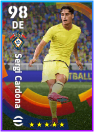
LE · Lateral Defensivo
Sergi Cardona
Highlight — Spanish League Selection Guardians 23 Feb '26 — Sergi Cardona
68 PP● PP conferidos · treino por funçãoNível máx. 35 · informado
#008ÉPICA
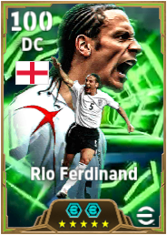
ZC · Construção de Jogo
Rio Ferdinand
Epic — England 2006 (23 Jul 2026)
56 PP● PP calculadoTreino P · função
#009ÉPICA
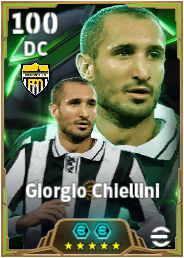
ZC · Básico
Giorgio Chiellini
Epic — Piemonte BN 14-15
56 PP● PP calculadoTreino P · função
#010ÉPICA
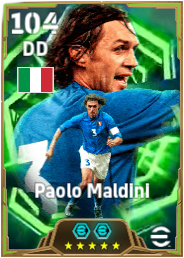
LD · Lateral Defensivo
Atributos-base cadastrados • Laboratório CPaolo Maldini
Epic — Italy 2000 (4 Dec 2025)
64 PP● Base verificadaTreino P · atributos
#011SHOW TIME
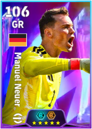
GO · Básico
Atributos-base cadastrados • Laboratório CManuel Neuer
Show Time — Living Legends 2026 (26 Jul 2026)
54 PP● Base verificadaTreino A · atributos
#012ÉPICA
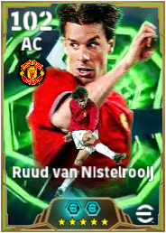
CA · Matador
Ruud van Nistelrooij
Epic — Manchester United 01-02
60 PP● PP conferidos · treino por funçãoNível máx. 31 · informado
#013ÉPICA
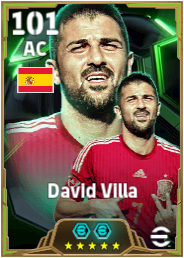
CA · Arrastar Defesa
David Villa
Epic — Spain 2010 (16 Jul 2026)
60 PP● PP calculadoTreino P · função
#014SHOW TIME
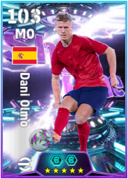
MAT · Criador de Espaços
Dani Olmo
Show Time — Spain 2026 (20 Jul 2026)
62 PP● PP calculadoTreino P · função
#015ÉPICA
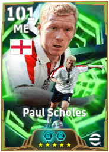
ALA · Todo o Terreno
Paul Scholes
Epic — England 2004 (Legends Assemble, 26 Jul 2026)
62 PP● PP calculadoTreino A · função
#016DISTINGUIDO
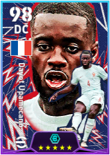
ZC · Básico
Dayot Upamecano
Highlight — National Teams Selection 8 Jan '26 — Dayot Upamecano
52 PP● PP conferidos · treino por funçãoNível máx. 27 · informado
#017ÉPICA
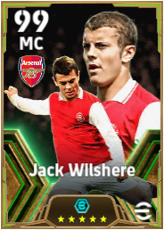
MLG · Orquestrador
Jack Wilshere
Epic — Arsenal FC 10-11
64 PP● PP calculadoTreino B · função
#018ÉPICA
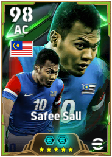
CA · Matador
Safee Sali
Epic — Malaysia 2011 — Safee Sali
62 PP● PP conferidos · treino por funçãoNível máx. 32 · informado
#019ÉPICA
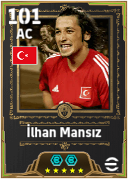
CA · Matador
İlhan Mansız
Epic — Türkiye 2002 (distribuição 30th Anniversary, 2026)
60 PP● PP calculadoTreino P · função
#020DISTINGUIDO
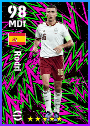
VOL · Trinco
Rodri
Highlight — National Team Selection Spain 5 Sep '24 — Rodri
52 PP● PP calculadoTreino B · função
#021DISTINGUIDO
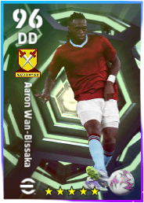
LD · Lateral Defensivo
Aaron Wan-Bissaka
Highlight — European Clubs Selection 9 Oct '25
78 PP● PP calculadoTreino P · função
#022DISTINGUIDO
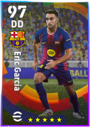
LD · Lateral Defensivo
Eric García
Highlight — Spanish League Selection 16 Oct '25
58 PP● PP calculadoTreino A · função
#023SHOW TIME
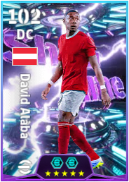
ZC · Construção de Jogo
David Alaba
Highlight — Starter Set 28 May '26
60 PP● PP calculadoTreino P · funçãoRaridade confirmada
#024BIG TIME
CA · Oportunista
Atributos-base cadastrados • Laboratório CCristiano Ronaldo
Big Time — Portugal 23 Jun '26
62 PP● Base verificadaTreino P · atributos
#025ÉPICA
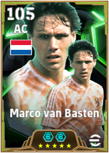
CA · Matador
Atributos-base cadastrados • Laboratório CMarco van Basten
Epic — Netherlands 1988
62 PP● Base verificadaTreino P · atributos
#026ÉPICA
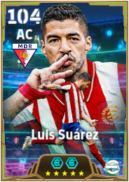
CA · Matador
Luis Suárez
Epic — Madrid Rosas RB 20-21
60 PP● PP conferidos · treino por funçãoNível máx. 31 · informado
#027ÉPICA
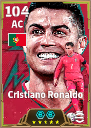
CA · Oportunista
Atributos-base cadastrados • Laboratório CCristiano Ronaldo
Epic — Portugal 2026
60 PP● Base verificadaTreino P · atributos
#028SHOW TIME
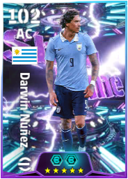
CA · Oportunista
Darwin Núñez
Show Time — Starter Set 28 May '26
68 PP● PP calculadoTreino P · função
#029ÉPICA
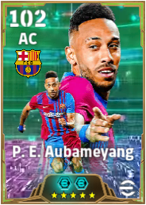
CA · Oportunista
P. E. Aubameyang
Epic — FC Barcelona 21-22
60 PP● PP calculadoTreino P · função
#030ÉPICA
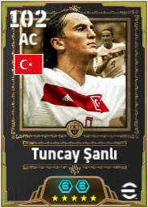
CA · Oportunista
Tuncay Şanlı
Epic — Türkiye 2003
60 PP● PP calculadoTreino P · função
#031ÉPICA
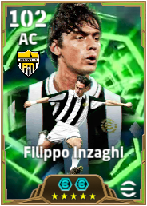
CA · Oportunista
Filippo Inzaghi
Epic — Piemonte BN 99-00
60 PP● PP calculadoTreino P · função
#032ÉPICA
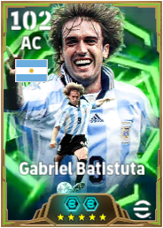
CA · Matador
Gabriel Batistuta
Epic — Argentina 1998
62 PP● PP calculadoTreino P · função
#033ÉPICA
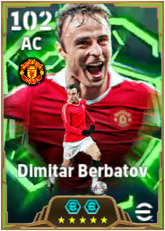
CA · Avançado Pivô
Dimitar Berbatov
Epic — Manchester United 10-11
62 PP● PP calculadoTreino A · função
#034ÉPICA
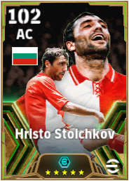
CA · Oportunista
Hristo Stoichkov
Epic — Bulgaria 1994
60 PP● PP calculadoTreino P · função
#035SHOW TIME
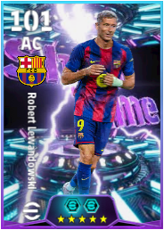
CA · Oportunista
Robert Lewandowski
Highlight — 900 Million Downloads Campaign
52 PP● PP calculadoTreino P · funçãoRaridade confirmada
#036SHOW TIME
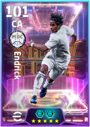
CA · Atacante pivô
Endrick
Highlight — New Year's Gift 1 Jan '25
60 PP● PP calculadoTreino P · funçãoRaridade confirmada
#037ÉPICA
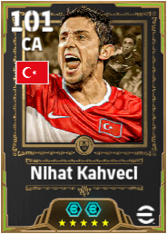
CA · Artilheiro
Nihat Kahveci
Epic — Türkiye 2008
62 PP● PP calculadoTreino P · função
#038ÉPICA
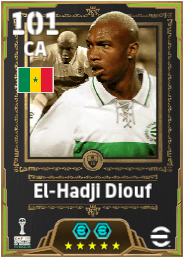
CA · Artilheiro
El-Hadji Diouf
Epic — Senegal 2002
62 PP● PP calculadoTreino P · função
#039ÉPICA
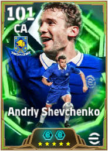
CA · Artilheiro
Atributos-base cadastrados • Laboratório CAndriy Shevchenko
Epic — Chelsea B 06-07
60 PP● Base verificadaTreino P · atributos
#040ÉPICA
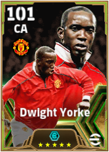
CA · Artilheiro
Dwight Yorke
Epic — Manchester United FC 99-00
60 PP● PP calculadoTreino P · função
#041SHOW TIME
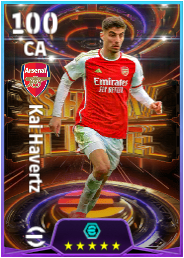
CA · Atacante pivô
Kai Havertz
Highlight — Arsenal FC Selection 21 May '26
50 PP● PP calculadoTreino P · funçãoRaridade confirmada
#042DISTINGUIDO
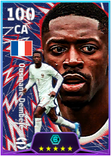
CA · Artilheiro
Ousmane Dembélé
Highlight — National Team Pack France 2026
62 PP● PP calculadoTreino P · função
#043ÉPICA
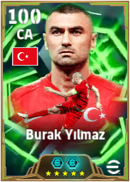
CA · Artilheiro
Burak Yılmaz
Epic — Türkiye 2021
60 PP● PP calculadoTreino P · função
#044DISTINGUIDO
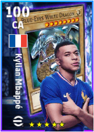
CA · Artilheiro
Kylian Mbappé
Highlight — Yu-Gi-Oh! Collaboration Campaign 25 Sep '25
36 PP● PP calculadoTreino A · função
#045ÉPICA
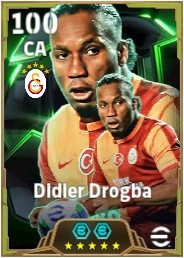
CA · Homem de área
Didier Drogba
Epic — Galatasaray SK 13-14
62 PP● PP calculadoTreino P · função
#046SHOW TIME
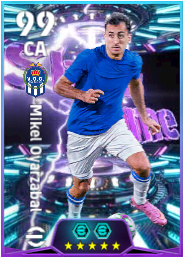
CA · Atacante pivô
Mikel Oyarzabal
Show Time — Show Time 12 Feb '26
52 PP● PP calculadoTreino B · função
#047ÉPICA
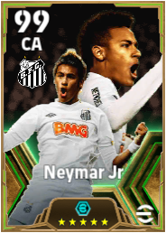
CA · Atacante pivô
Neymar Jr
Epic — Santos FC 2011
70 PP● PP calculadoTreino P · função
#048ÉPICA
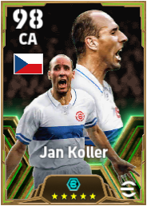
CA · Pivô
Jan Koller
Epic — Czechia 2004
60 PP● PP calculadoTreino P · função
#049DISTINGUIDO
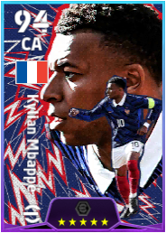
CA · Artilheiro
Kylian Mbappé
Highlight — National Team Pack France 2026
60 PP● PP calculadoTreino P · função
#050SHOW TIME
SA · Clássico nº 10
Lionel Messi
Show Time - edição exata a confirmar (CAP050)
56 PP● PP conferidos · treino por funçãoNível máx. 29 · informadoRaridade a revalidar
#051ÉPICA
SA · Clássico nº 10
Diego Maradona
Epic — FC Barcelona 82-83
58 PP● PP calculadoTreino A · função
#052ÉPICA
SA · Puxa marcação
Okazaki Shinji
Epic — Leicester B 15-16
64 PP● PP calculadoTreino A · função
#053SHOW TIME
PONTA · Ala produtivo
Lionel Messi
Show Time — The Football Festival Campaign 2026
62 PP● PP calculadoTreino A · função
#054SHOW TIME
PONTA · Lateral móvel
Lamine Yamal
Show Time — The Football Festival Campaign 2026
60 PP● PP calculadoTreino A · função
#055ÉPICA
PONTA · Ala produtivo
Dirk Kuyt
Epic — Liverpool R 08-09
62 PP● PP calculadoTreino A · função
#056SHOW TIME
PONTA · Lateral móvel
Désiré Doué
Show Time — Daily Bonus 2026
62 PP● PP calculadoTreino A · função
#057SHOW TIME
PONTA · Armador criativo
Lionel Messi
Show Time — Skill Up 2026 — Lionel Messi
56 PP● PP calculadoTreino A · função
#058SHOW TIME
PONTA · Armador criativo
Lionel Messi
Show Time — Skill Up — Lionel Messi
48 PP● PP calculadoTreino A · função
#059DISTINGUIDO
PONTA · Armador criativo
Michael Olise
Highlight — National Team Pack France 2026
60 PP● PP calculadoTreino P · função
#060ÉPICA
PONTA · Ala produtivo
Luis García
Epic — FC Barcelona 03-04
56 PP● PP calculadoTreino P · função
#061DISTINGUIDO
PONTA · Ala produtivo
Savinho
Highlight — Brazil & England National Team Campaign 6 Nov '25
56 PP● PP calculadoTreino A · função
#062DISTINGUIDO
PONTA · Ala produtivo
Doan Ritsu
Highlight — National Team Selection Japan 10 Oct '24 — Ritsu Doan
68 PP● PP calculadoTreino A · função
#063DISTINGUIDO
PONTA · Ala produtivo
Estêvão
Highlight — SE Palmeiras Selection 13 Sep '24
56 PP● PP calculadoTreino A · função
#064ÉPICA
PONTA · Ala produtivo
Burchet
Epic — Master League Sprint 27 Aug '26
36 PP● PP conferidos · treino por funçãoNível máx. 19 · informado
#065DISTINGUIDO
PONTA · Ala produtivo
Raphinha
Highlight — Captain Tsubasa Collaboration Campaign 30 Jan '25 — Raphinha
56 PP● PP conferidos · treino por funçãoNível máx. 29 · informado
#066DISTINGUIDO
PONTA · Armador criativo
Pedro Neto
Highlight — National Team Pack Portugal 2026
60 PP● PP calculadoTreino A · função
#067DISTINGUIDO
PONTA · Ala produtivo
Antoine Semenyo
Highlight — English League Selection 13 Aug '26 — Antoine Semenyo
60 PP● PP conferidos · treino por funçãoNível máx. 31 · informado
#068BIG TIME
PONTA · Armador criativo
Ronaldinho Gaúcho
Big Time — 19 Nov '05
56 PP● PP calculadoTreino A · função
#069ÉPICA
PONTA · Ala produtivo
Eden Hazard
Epic — Chelsea B 16-17
62 PP● PP calculadoTreino A · função
#070ÉPICA
PONTA · Ala produtivo
Denílson
Epic — Brazil 1997
60 PP● PP calculadoTreino A · função
#071SHOW TIME
PONTA · Lateral móvel
Ramadhan Saifullah
Show Time — Liga Super Malaysia 25-26 Season's Best — Ramadhan Saifullah
68 PP● PP conferidos · treino por funçãoNível máx. 35 · informado
#072ÉPICA
PONTA · Ala produtivo
Atep
Epic — Indonesia 2007
60 PP● PP calculadoTreino A · função
#073ÉPICA
PONTA · Armador criativo
Andrés Iniesta
Epic — Spain 2010 — Andrés Iniesta
56 PP● PP conferidos · treino por funçãoNível máx. 29 · informado
#074DISTINGUIDO
PONTA · Ala produtivo
João Félix
Highlight — National Team Pack Portugal 2026
60 PP● PP calculadoTreino P · função
#075SHOW TIME
PONTA · Ala produtivo
Luis Díaz
Highlight — Daily Bonus 2026 — Luis Díaz
60 PP● PP calculadoTreino A · funçãoRaridade confirmada
#076DISTINGUIDO
PONTA · Ala produtivo
K. Kvaratskhelia
Highlight — Anticipated Standouts 26-27
60 PP● PP calculadoTreino A · função
#077ÉPICA
MAT · Armador criativo
Rivaldo
Epic — FC Barcelona 98-99
68 PP● PP calculadoTreino A · função
#078ÉPICA
MAT · Armador criativo
Atributos-base cadastrados • Laboratório CGuti
Epic — Madrid Chamartin B 01-02
60 PP● Base verificadaTreino C · atributos
#079SHOW TIME
MAT · Armador criativo
Neymar Jr
Highlight — Campaign Rewards Feb '26 — Neymar Jr
60 PP● PP calculadoTreino B · funçãoRaridade confirmada
#080SHOW TIME
MAT · Jogador de infiltraç
Xavi Simons
Highlight — Extraordinary One 4 Dec '25 — Xavi Simons
58 PP● PP calculadoTreino B · funçãoRaridade confirmada
#081BIG TIME
MAT · Clássico nº 10
Rivaldo
Big Time — 17 Jun '01
60 PP● PP calculadoTreino B · função
#082DISTINGUIDO
MAT · Armador criativo
Cole Palmer
Highlight — English League Selection 13 Aug '26
62 PP● PP calculadoTreino B · função
#083DISTINGUIDO
MAT · Armador criativo
Rayan Cherki
Highlight — National Team Pack France 2026 — Rayan Cherki
64 PP● PP calculadoTreino B · função
#084ÉPICA
MAT · Armador criativo
Franck Ribéry
Epic — München RW 13-14
60 PP● PP calculadoTreino B · função
#085ÉPICA
MAT · Armador criativo
Minanda
Epic — Master League Sprint 28 May '26 — Minanda
36 PP● PP calculadoTreino A · função
#086DISTINGUIDO
MAT · Armador criativo
Bruno Fernandes
Highlight — National Team Pack Portugal 2026 — Bruno Fernandes
64 PP● PP conferidos · treino por funçãoNível máx. 33 · informado
#087SHOW TIME
ALA · Perito em cruzamento
Giuliano Simeone
Show Time — Ranking Event Rewards 2027
62 PP● PP conferidos · treino por funçãoNível máx. 32 · informado
#088SHOW TIME
ALA · Armador criativo
Václav Černý
Show Time — Trendyol Süper Lig Monthly MVPs Apr '26
68 PP● PP calculadoTreino P · função
#089DISTINGUIDO
ALA · Jogador de infiltraç
Iliman Ndiaye
Highlight — English League Selection 13 Aug '26
62 PP● PP calculadoTreino P · função
#090ÉPICA
ALA · Jogador de infiltraç
Neymar Jr
Epic — Brazil 2016
62 PP● PP calculadoTreino P · função
#091ÉPICA
ALA · Perito em cruzamento
Serginho
Epic — AC Milan 02-03
62 PP● PP calculadoTreino A · função
#092ÉPICA
ALA · Jogador de infiltraç
Denílson
Epic — Brazil 1997 (Hole Player)
64 PP● PP calculadoTreino P · função
#093DISTINGUIDO
ALA · Jogador de infiltraç
Matheus Cunha
Highlight — English League Selection 13 Aug '26
62 PP● PP calculadoTreino P · função
#094ÉPICA
ALA · Meia versátil
Park Ji-Sung
Epic — Manchester United 08-09
64 PP● PP calculadoTreino P · função
#095ÉPICA
MLG · Meia versátil
Frank Lampard
Epic — England 2006
64 PP● PP calculadoTreino A · função
#096DISTINGUIDO
MLG · Orquestrador
Vitinha
Highlight — National Team Pack Portugal 2026
64 PP● PP calculadoTreino B · função
#097SHOW TIME
MLG · Meia versátil
Sandro Tonali
Show Time — eFootball™ League Rewards Phase 5
62 PP● PP calculadoTreino A · função
#098ÉPICA
MLG · Orquestrador
Thiago Alcantara
Epic — Spain 2021
90 PP● PP calculadoTreino A · função
#099SHOW TIME
MLG · Meia versátil
Joelinton
Highlight — Show Time 13 Nov '25 — Joelinton
64 PP● PP calculadoTreino A · funçãoRaridade confirmada
#100SHOW TIME
MLG · Meia versátil
Orkun Kökçü
Highlight — Daily Bonus 2026 — Orkun Kökçü
70 PP● PP calculadoTreino A · funçãoRaridade confirmada
#101ÉPICA
MLG · Básico
Darren Fletcher
Epic — Manchester United — identidade exata por Card ID 88039044945180
66 PP● PP conferidos · treino por funçãoNível máx. 34 · informado
#102DISTINGUIDO
MLG · Meia versátil
João Neves
Highlight — National Team Pack Portugal 2026
64 PP● PP calculadoTreino A · função
#103DISTINGUIDO
MLG · Meia versátil
Dominik Szoboszlai
Highlight — English League Selection 13 Aug '26 — Dominik Szoboszlai
60 PP● PP conferidos · treino por funçãoNível máx. 31 · informado
#104SHOW TIME
VOL · Primeiro volante
Atributos-base cadastrados • Laboratório CFrank Rijkaard
Epic — Ajax — ID 88036360719848 (rótulo de pack/era não exposto de forma inequívoca)
64 PP● Base verificadaTreino P · atributosRaridade confirmada
#105SHOW TIME
VOL · Primeiro volante
Jordan Henderson
Show Time — National Teams Selection 6 Nov '25
68 PP● PP calculadoTreino P · função
#106ÉPICA
VOL · Orquestrador
Atributos-base cadastrados • Laboratório CPep Guardiola
Epic — Spain 2000 — Pep Guardiola
64 PP● Base verificadaTreino P · atributos
#107DISTINGUIDO
VOL · Primeiro volante
Aurélien Tchouaméni
Highlight — Spanish League Selection 2 Apr '26 — Aurélien Tchouaméni
64 PP● PP conferidos · treino por funçãoNível máx. 33 · informado
#108SHOW TIME
VOL · Meia versátil
N'Golo Kanté
Highlight — National Team Pack France 2026
64 PP● PP calculadoTreino P · funçãoRaridade confirmada
#109SHOW TIME
VOL · Orquestrador
Rúben Neves
Highlight — National Teams Selection 13 Jul '26 — Rúben Neves
60 PP● PP conferidos · treino por funçãoNível máx. 31 · informadoRaridade confirmada
#110DISTINGUIDO
VOL · Primeiro volante
Aurélien Tchouaméni
Highlight — National Team Pack France 2026
58 PP● PP calculadoTreino P · função
#111DISTINGUIDO
VOL · Meia versátil
N'Golo Kanté
Highlight — Leo Messi Edition 2027 — N'Golo Kanté
64 PP● PP calculadoTreino P · função
#112DISTINGUIDO
VOL · Primeiro volante
Amadou Onana
Highlight — National Teams Selection 8 Jan '26 — Amadou Onana
56 PP● PP conferidos · treino por funçãoNível máx. 29 · informado
#113DISTINGUIDO
VOL · Orquestrador
Bruno Guimarães
Highlight — European Clubs Selection Guardians 3 Nov '25 — Bruno Guimarães
60 PP● PP calculadoTreino P · função
#114DISTINGUIDO
VOL · Orquestrador
Jorginho
CR Flamengo — versão treinável 2026
68 PP● PP calculadoTreino P · função
#115DISTINGUIDO
VOL · Primeiro volante
Casemiro
Highlight — Manchester United Pack 25-26 — Casemiro
54 PP● PP conferidos · treino por funçãoNível máx. 28 · informado
#116DISTINGUIDO
VOL · Básico
Christian Ordóñez
Highlight — Newly Licensed Italian Clubs 9 Oct '25
68 PP● PP conferidos · treino por funçãoNível máx. 35 · informado
#117DISTINGUIDO
VOL · Meia versátil
Moisés Caicedo
Highlight — Mid-season MVPs 8 Jan '26 — Moisés Caicedo
64 PP● PP conferidos · treino por funçãoNível máx. 33 · informado
#118DISTINGUIDO
VOL · Meia versátil
Sandro Tonali
Highlight — National Team Pack Italy '25 — Sandro Tonali
68 PP● PP conferidos · treino por funçãoNível máx. 35 · informado
#119DISTINGUIDO
VOL · Meia versátil
Tyler Adams
Standard — Bournemouth RB — eFootball 2027
68 PP● PP conferidos · treino por funçãoNível máx. 35 · informadoRaridade confirmada
#120DISTINGUIDO
VOL · Orquestrador
Rodrigo Bentancur
Standard — Tottenham WB — eFootball 2027
68 PP● PP conferidos · treino por funçãoNível máx. 35 · informadoRaridade confirmada
#121ÉPICA
LD · Lateral ofensivo
Belletti
Epic — European Clubs Special Selection Contract (Festive Season Campaign, Jan 2025)
72 PP● PP calculadoTreino P · função
#122ÉPICA
LD · Lateral ofensivo
Cafu
Epic — Roma GR 00-01 — Cafu
72 PP● PP calculadoTreino A · função
#123DISTINGUIDO
LD · Lateral atacante
João Cancelo
Highlight — National Team Pack Portugal 2026
64 PP● PP calculadoTreino A · função
#124DISTINGUIDO
LD · Lateral ofensivo
Dominik Szoboszlai
Highlight — Role Changers 5 Mar '26 — Dominik Szoboszlai
64 PP● PP calculadoTreino A · função
#125DISTINGUIDO
LD · Lateral defensivo
Nordi Mukiele
Highlight — English League Selection 13 Aug '26
64 PP● PP calculadoTreino P · função
#126DISTINGUIDO
LD · Lateral atacante
Daniel Muñoz
Trending — POTW National Teams 28 Mar '24 — Daniel Muñoz
68 PP● PP conferidos · treino por funçãoNível máx. 35 · informadoRaridade confirmada
#127DISTINGUIDO
LD · Lateral defensivo
Atributos-base cadastrados • Laboratório CJules Koundé
National Team Icons vol.3 — France
60 PP● Base verificadaTreino A · atributos
#128DISTINGUIDO
LD · Lateral defensivo
Matteo Darmian
Highlight — Italian League Selection Guardians 8 Sep '25 — Matteo Darmian
88 PP● PP calculadoTreino P · função
#129DISTINGUIDO
LD · Lateral ofensivo
Malo Gusto
Highlight — National Team Pack France 2026
64 PP● PP calculadoTreino A · função
#130DISTINGUIDO
LD · Lateral ofensivo
Reece James
Highlight — Step-up 2027 — Reece James
56 PP● PP calculadoTreino A · função
#131DISTINGUIDO
LD · Lateral defensivo
Juan Foyth
Highlight — Tactical Defence 13 Aug '26
56 PP● PP calculadoTreino A · função
#132ÉPICA
LE · Lateral ofensivo
Atributos-base cadastrados • Laboratório CJavier Zanetti
Epic — Internazionale Milano 09-10
64 PP● Base verificadaTreino B · atributos
#133SHOW TIME
LE · Lateral atacante
Nico O'Reilly
Show Time — Mobile 9th Anniversary Celebration
64 PP● PP calculadoTreino A · função
#134ÉPICA
LE · Lateral ofensivo
Mikaël Silvestre
Epic — Manchester United — ID 88036360587096 (rótulo do pack/era PENDENTE)
64 PP● PP calculadoTreino A · função
#135DISTINGUIDO
LE · Lateral ofensivo
Nuno Mendes
Highlight — National Team Pack Portugal 2026
64 PP● PP calculadoTreino A · função
#136DISTINGUIDO
LE · Lateral defensivo
Tyrick Mitchell
Highlight — English League Selection 13 Aug '26
64 PP● PP calculadoTreino A · função
#137DISTINGUIDO
LE · Lateral ofensivo
Marc Cucurella
Highlight — Spain Selection 16 Jul '26 — Marc Cucurella
68 PP● PP calculadoTreino A · função
#138DISTINGUIDO
LE · Lateral ofensivo
Théo Hernández
Highlight — National Team Pack France 2026
64 PP● PP calculadoTreino A · função
#139SHOW TIME
LE · Lateral ofensivo
Noussair Mazraoui
Show Time — Road to CAF AFCON 2027 — Noussair Mazraoui
68 PP● PP conferidos · treino por funçãoNível máx. 35 · informado
#140DISTINGUIDO
LE · Lateral ofensivo
Alejandro Grimaldo
Highlight — Summer Transfer 13 Aug '26 — Alejandro Grimaldo
64 PP● PP conferidos · treino por funçãoNível máx. 33 · informado
#141DISTINGUIDO
LE · Lateral ofensivo
Ian Maatsen
Standard — Aston RB — eFootball 2027
76 PP● PP conferidos · treino por funçãoNível máx. 39 · informadoRaridade confirmada
#142DISTINGUIDO
LE · Lateral ofensivo
Andrew Robertson
Highlight — National Team Captains 11 Jun '26 — Andrew Robertson
64 PP● PP conferidos · treino por funçãoNível máx. 33 · informado
#143ÉPICA
ZC · Defensor criativo
Atributos-base cadastrados • Laboratório CFranco Baresi
Epic — AC Milan 89-90
60 PP● Base verificadaTreino P · atributos
#144SHOW TIME
ZC · Defensor criativo
Dean Huijsen
Show Time — New Year's Gift 2026 — Dean Huijsen
52 PP● PP calculadoTreino B · função
#145ÉPICA
ZC · Defensor criativo
Franz Beckenbauer
Epic — München RW 75-76
64 PP● PP calculadoTreino P · função
#146SHOW TIME
ZC · Básico
Manuel Akanji
Show Time — Daily Bonus 2026 — Manuel Akanji
60 PP● PP calculadoTreino P · função
#147ÉPICA
ZC · Básico
Atributos-base cadastrados • Laboratório CTony Adams
Epic — Arsenal FC 90-91
56 PP● Base verificadaTreino P · atributos
#148SHOW TIME
ZC · Básico
Vitão
Show Time — Brazilian League 2024 Season's Best — Vitão
56 PP● PP calculadoTreino P · função
#149DISTINGUIDO
ZC · Defensor criativo
Jan Paul van Hecke
Highlight — English League Selection 13 Aug '26
52 PP● PP calculadoTreino B · função
#150DISTINGUIDO
ZC · Defensor criativo
Ibrahima Konaté
Highlight — Summer Transfer 13 Aug '26
52 PP● PP calculadoTreino A · função
#151DISTINGUIDO
ZC · Básico
Willian Pacho
Highlight — Ligue 1 McDonald’s Selection 2 Mar '26 — Willian Pacho
52 PP● PP conferidos · treino por funçãoNível máx. 27 · informado
#152DISTINGUIDO
ZC · Defensor criativo
Pierre Kalulu
Highlight — European Clubs Selection 20 Nov '25 — Pierre Kalulu
52 PP● PP conferidos · treino por funçãoNível máx. 27 · informado
#153DISTINGUIDO
ZC · Defensor criativo
Dean Huijsen
Show Time — New Year's Gift 2026 — Dean Huijsen
52 PP● PP calculadoTreino B · funçãoRaridade confirmada
#154DISTINGUIDO
ZC · Defensor criativo
Ibrahima Konaté
Highlight — National Team Pack France 2026 — Ibrahima Konaté
52 PP● PP calculadoTreino B · função
#155DISTINGUIDO
ZC · Defensor criativo
Micky van de Ven
Highlight — Speedsters 6 Nov '25 — Micky van de Ven
48 PP● PP conferidos · treino por funçãoNível máx. 25 · informado
#156DISTINGUIDO
ZC · Defensor criativo
Ibrahima Konaté
Highlight — Daily Bonus — Ibrahima Konaté
38 PP● PP calculadoTreino P · função
#157DISTINGUIDO
ZC · Básico
Renato Veiga
Highlight — National Team Pack Portugal 2026
56 PP● PP calculadoTreino P · função
#158DISTINGUIDO
ZC · Defensor criativo
António Silva
Highlight — National Team Pack Portugal 2026
52 PP● PP calculadoTreino B · função
#159DISTINGUIDO
ZC · Defensor criativo
Pau Cubarsí
Highlight — Spain 2026 — Pau Cubarsí
56 PP● PP calculadoTreino P · função
#160DISTINGUIDO
ZC · Defensor criativo
Marc Guéhi
Highlight — Starter Set 2027 — Marc Guéhi
52 PP● PP calculadoTreino B · função
#161DISTINGUIDO
ZC · Defensor criativo
Rúben Dias
Highlight — Pressure-Proof 2026 — Rúben Dias
52 PP● PP conferidos · treino por funçãoNível máx. 27 · informado
#162DISTINGUIDO
ZC · Defensor criativo
Pau Torres
Highlight — English League Selection 13 Aug '26 — Pau Torres
52 PP● PP conferidos · treino por funçãoNível máx. 27 · informado
#163DISTINGUIDO
ZC · Defensor criativo
Jérémy Jacquet
Highlight — Summer Transfer 13 Aug '26 — Jérémy Jacquet
52 PP● PP calculadoTreino B · função
#164DISTINGUIDO
ZC · Atacante surpresa
Marc Guéhi
Highlight — Tactical Defence 13 Aug '26
56 PP● PP conferidos · treino por funçãoNível máx. 29 · informado
#165DISTINGUIDO
ZC · Básico
Cristian Romero
Show Time — Tournament Stars 2026 — Cristian Romero
52 PP● PP calculadoTreino A · funçãoRaridade confirmada
#166DISTINGUIDO
ZC · Defensor criativo
Maxence Lacroix
Highlight — Chelsea B — ID 105880876084074 (rótulo do pack PENDENTE)
52 PP● PP calculadoTreino B · função
#167DISTINGUIDO
ZC · Defensor criativo
Danilo
Standard — Danilo — CB
52 PP● PP conferidos · treino por funçãoNível máx. 27 · informadoRaridade confirmada
#168ÉPICA
GO · Básico
Petr Čech
Epic — Chelsea B 05-06 — Petr Čech
56 PP● PP conferidos · treino por funçãoNível máx. 29 · informado
#169ÉPICA
GO · Básico
Oliver Kahn
Epic — München RW 00-01
56 PP● PP calculadoTreino P · função
#170SHOW TIME
GO · Básico
Jan Oblak
Highlight — Extraordinary One 4 Dec '25 — Jan Oblak
50 PP● PP conferidos · treino por funçãoNível máx. 26 · informadoRaridade confirmada
#171ÉPICA
GO · Goleiro adiantado
Iker Casillas
Epic — Starter Set: Iker Casillas (FC Porto, 20 Aug 2026)
56 PP● PP calculadoTreino P · função
#172DISTINGUIDO
GO · Básico
Thibaut Courtois
Highlight — Leo Messi Edition 2027 — Thibaut Courtois
46 PP● PP conferidos · treino por funçãoNível máx. 24 · informado
#173DISTINGUIDO
GO · Básico
Mike Maignan
Highlight — National Team Pack France 2026
56 PP● PP calculadoTreino P · função
#174DISTINGUIDO
GO · Básico
Rui Silva
Highlight — National Team Pack Portugal 2026
62 PP● PP calculadoTreino P · função
#175DISTINGUIDO
GO · Básico
Manuel Neuer
Highlight — Captain Tsubasa Collaboration Campaign 5 Dec '24 — Manuel Neuer
40 PP● PP calculadoTreino P · função
#176DISTINGUIDO
GO · Básico
Caoimhin Kelleher
Highlight — English League Selection 13 Aug '26
56 PP● PP calculadoTreino P · função
#177DISTINGUIDO
GO · Básico
Dean Henderson
Standard — Dean Henderson — Crystal Palace RB
56 PP● PP conferidos · treino por funçãoNível máx. 29 · informadoRaridade confirmada
#178DISTINGUIDO
CA · Homem de área
Romelu Lukaku
Highlight — European Clubs Selection 1 Jan '25 — Romelu Lukaku
60 PP● PP calculadoTreino P · função
#179DISTINGUIDO
CA · Artilheiro
Victor Osimhen
Highlight — CAF Africa Cup of Nations Selection 11 Dec '25 — Victor Osimhen
56 PP● PP conferidos · treino por funçãoNível máx. 29 · informado
#180DISTINGUIDO
CA · Atacante pivô
Hugo Ekitiké
Highlight — Anticipated Standouts 25-26 — Hugo Ekitiké
60 PP● PP calculadoTreino P · função
#181DISTINGUIDO
CA · Artilheiro
Serhou Guirassy
Highlight — eFootball League Rewards Phase 9 — Serhou Guirassy
60 PP● PP conferidos · treino por funçãoNível máx. 31 · informado
#182DISTINGUIDO
CA · Artilheiro
Marcus Thuram
Highlight — Elite Lineage 30 Apr '26 — Marcus Thuram
60 PP● PP calculadoTreino P · função
#183DISTINGUIDO
CA · Artilheiro
P. E. Aubameyang
Highlight — eFootball League Rewards Phase 2 — P. E. Aubameyang
62 PP● PP conferidos · treino por funçãoNível máx. 32 · informado
#184DISTINGUIDO
CA · Atacante pivô
João Pedro
Highlight — National Team Selection Brazil Jun '26 — João Pedro
62 PP● PP calculadoTreino P · função
#185DISTINGUIDO
CA · Homem de área
Pedro
Standard — Pedro — CR Flamengo
76 PP● PP calculadoTreino P · funçãoRaridade confirmada
#186DISTINGUIDO
SA · Armador criativo
Neymar Jr
Highlight — Yu-Gi-Oh! Collaboration Campaign 25 Sep '25 — Neymar Jr × Dark Magician
58 PP● PP conferidos · treino por funçãoNível máx. 30 · informado
#187DISTINGUIDO
PONTA · Ala produtivo
Gonzalo Plata
Highlight — Champions Campaign 2025 CR Flamengo — Gonzalo Plata
62 PP● PP calculadoTreino A · função
#188DISTINGUIDO
PONTA · Ala produtivo
Antoine Semenyo
Highlight — English League Selection 22 Dec '25 — Antoine Semenyo
62 PP● PP calculadoTreino A · função
#189DISTINGUIDO
PONTA · Ala produtivo
Donyell Malen
Standard — Donyell Malen — Roma GR
60 PP● PP conferidos · treino por funçãoNível máx. 31 · informadoRaridade confirmada
#190DISTINGUIDO
PONTA · Ala produtivo
Rafael Leão
Highlight — Daily Bonus 2026 — Rafael Leão
50 PP● PP calculadoTreino A · função
#191DISTINGUIDO
PONTA · Ala produtivo
Gabriel Martinelli
Highlight — National Team Selection Brazil Jun '26 — Gabriel Martinelli
66 PP● PP calculadoTreino A · função
#192DISTINGUIDO
PONTA · Ala produtivo
Jérémy Doku
Highlight — National Team Selection Worldwide 30 Apr '26 — Jérémy Doku
60 PP● PP conferidos · treino por funçãoNível máx. 31 · informado
#193DISTINGUIDO
PONTA · Ala produtivo
Allan Saint-Maximin
Highlight — Magical Dribbler 2 Apr '26 — Allan Saint-Maximin
60 PP● PP conferidos · treino por funçãoNível máx. 31 · informado
#194DISTINGUIDO
PONTA · Ala produtivo
Bruno Henrique
Highlight — Champions Campaign 2025 CR Flamengo — Bruno Henrique
56 PP● PP conferidos · treino por funçãoNível máx. 29 · informado
#195DISTINGUIDO
PONTA · Lateral móvel
Raphinha
Highlight — Advertisement Reward 2027 — Raphinha
54 PP● PP conferidos · treino por funçãoNível máx. 28 · informado
#196DISTINGUIDO
PONTA · Ala produtivo
Savinho
Highlight — Brazil & England National Team Campaign 6 Nov '25 — Savinho
56 PP● PP calculadoTreino A · função
#197DISTINGUIDO
PONTA · Armador criativo
Leandro Trossard
Highlight — Clutch Players 4 Dec '25 — Leandro Trossard
54 PP● PP calculadoTreino A · função
#198DISTINGUIDO
PONTA · Ala produtivo
Cody Gakpo
Standard — Liverpool R — eFootball 2027
66 PP● PP calculadoTreino A · funçãoRaridade confirmada
#199DISTINGUIDO
PONTA · Armador criativo
João Félix
Standard — João Félix
62 PP● PP conferidos · treino por funçãoNível máx. 32 · informadoRaridade confirmada
#200DISTINGUIDO
PONTA · Ala produtivo
Sadio Mané
Epic — CAF AFRICA CUP OF NATIONS 25 — Sadio Mané
66 PP● PP calculadoTreino A · funçãoRaridade confirmada
#201DISTINGUIDO
PONTA · Ala produtivo
Yan Diomande
Standard — Yan Diomande
62 PP● PP conferidos · treino por funçãoNível máx. 32 · informadoRaridade confirmada
#202DISTINGUIDO
MAT · Armador criativo
Cole Palmer
Highlight — National Team Pack England 2026 — Cole Palmer
62 PP● PP conferidos · treino por funçãoNível máx. 32 · informado
#203DISTINGUIDO
MAT · Jogador de infiltraç
Raphinha
Highlight — Brazil & England National Team Campaign 6 Nov '25
48 PP● PP calculadoTreino A · função
#204DISTINGUIDO
MAT · Jogador de infiltraç
Xavi Simons
Trending — POTW National Teams 27 Mar '25 — Xavi Simons
44 PP● PP conferidos · treino por funçãoNível máx. 23 · informadoRaridade confirmada
#205DISTINGUIDO
MAT · Armador criativo
Thiago Almada
Highlight — National Teams Campaign Mar '26 — Thiago Almada
54 PP● PP calculadoTreino B · função
#206DISTINGUIDO
MAT · Armador criativo
Nicolò Zaniolo
Highlight — Udinese Calcio — Card ID exato; rótulo comercial do pack PENDENTE
60 PP● PP calculadoTreino B · função
#207DISTINGUIDO
MAT · Clássico nº 10
James Rodríguez
Highlight — National Teams Selection 9 Apr '26 — James Rodríguez
70 PP● PP calculadoTreino B · função
#208DISTINGUIDO
MAT · Armador criativo
Michael Olise
Show Time — Pressure-Proof 2026 (30 Jul 2026)
62 PP● PP calculadoTreino B · funçãoRaridade confirmada
#209DISTINGUIDO
MAT · Armador criativo
Jamal Musiala
Highlight — National Team Rising Stars 2 Jul '26 — Germany
62 PP● PP calculadoTreino B · função
#210DISTINGUIDO
MAT · Armador criativo
Jamal Musiala
Show Time — 1-2 Cut-in A 23 Apr '26 — Jamal Musiala
62 PP● PP conferidos · treino por funçãoNível máx. 32 · informadoRaridade confirmada
#211DISTINGUIDO
ALA · Armador criativo
Kubo Takefusa
Highlight — NARUTO SHIPPUDEN Collaboration Campaign 2026 — Sasuke Uchiha × Takefusa Kubo
0 PP● 0 PP confirmadoNível máx. 1 · informado
#212DISTINGUIDO
ALA · Armador criativo
Luiz Araújo
Highlight — Champions Campaign 2025 CR Flamengo
58 PP● PP conferidos · treino por funçãoNível máx. 30 · informado
#213DISTINGUIDO
ALA · Jogador de infiltraç
Ethan Mbappé
Highlight — Role Changers 5 Mar 2026
62 PP● PP calculadoTreino P · função
#214DISTINGUIDO
ALA · Jogador de infiltraç
Nico Williams
Highlight — Spanish League Selection 2 Apr '26
62 PP● PP conferidos · treino por funçãoNível máx. 32 · informado
#215DISTINGUIDO
ALA · Jogador de infiltraç
Raphinha
Show Time — The All-Rounders 26 Dec '24
70 PP● PP calculadoTreino P · funçãoRaridade confirmada
#216DISTINGUIDO
MLG · Meia versátil
Declan Rice
Show Time — Central Dominator 5 Jan '26
64 PP● PP calculadoTreino A · funçãoRaridade confirmada
#217DISTINGUIDO
MLG · Orquestrador
Vitinha
Epic — World Player of the Year 2025
68 PP● PP calculadoTreino A · funçãoRaridade confirmada
#218DISTINGUIDO
MLG · Meia versátil
Nicolò Barella
Highlight — Italy Selection 11 Jun '26 — Nicolò Barella
62 PP● PP conferidos · treino por funçãoNível máx. 32 · informado
#219DISTINGUIDO
MLG · Meia versátil
Warren Zaïre-Emery
Highlight — France feat. Yu-Gi-Oh! — Warren Zaïre-Emery × Red-Eyes Black Dragon — 25 Sep 2025
54 PP● PP calculadoTreino A · função
#220DISTINGUIDO
MLG · Orquestrador
Luka Modrić
Highlight — National Team Captains 11 Jun '26
62 PP● PP conferidos · treino por funçãoNível máx. 32 · informado
#221DISTINGUIDO
MLG · Meia versátil
Khéphren Thuram
Highlight — Elite Lineage 30 Apr '26 — Khéphren Thuram
68 PP● PP conferidos · treino por funçãoNível máx. 35 · informado
#222DISTINGUIDO
MLG · Meia versátil
Gerson
Highlight — Brazil & England National Team Campaign 6 Nov '25
62 PP● PP conferidos · treino por funçãoNível máx. 32 · informado
#223DISTINGUIDO
MLG · Orquestrador
Frenkie de Jong
Highlight — National Team Icons vol.3
54 PP● PP conferidos · treino por funçãoNível máx. 28 · informado
#224DISTINGUIDO
MLG · Meia versátil
Manu Koné
Highlight — France Selection 9 Jul '26
64 PP● PP conferidos · treino por funçãoNível máx. 33 · informado
#225DISTINGUIDO
VOL · Primeiro volante
Rodri
Highlight — Back in the Game 14 Aug '25 — Rodri
52 PP● PP calculadoTreino A · função
#226DISTINGUIDO
ZC · Básico
José María Giménez
PENDENTE — não inventar sem Card ID/tela de versão
52 PP● PP conferidos · treino por funçãoNível máx. 27 · informado
#227DISTINGUIDO
MAT · Jogador de infiltraç
Kenan Yıldız
PENDENTE — não inventar sem Card ID/tela de versão
60 PP● PP conferidos · treino por funçãoNível máx. 31 · informado
#228SHOW TIME
ZC · Básico
Murilo
PENDENTE — não inventar sem Card ID/tela de versão
56 PP● PP conferidos · treino por funçãoNível máx. 29 · informado
#229DISTINGUIDO
LD · Lateral defensivo
Zeki Çelik
PENDENTE — não inventar sem Card ID/tela de versão
60 PP● PP conferidos · treino por funçãoNível máx. 31 · informado
#230DISTINGUIDO
MLG · Meia versátil
Pape Matar Sarr
PENDENTE — não inventar sem Card ID/tela de versão
62 PP● PP conferidos · treino por funçãoNível máx. 32 · informado
#231DISTINGUIDO
GO · Básico
Guglielmo Vicario
PENDENTE — não inventar sem Card ID/tela de versão
58 PP● PP conferidos · treino por funçãoNível máx. 30 · informado
#232SHOW TIME
ZC · Defensor criativo
Aymeric Laporte
PENDENTE — não inventar sem Card ID/tela de versão
60 PP● PP conferidos · treino por funçãoNível máx. 31 · informado
#233DISTINGUIDO
ALA · Meia versátil
Nicola Zalewski
PENDENTE — não inventar sem Card ID/tela de versão
70 PP● PP conferidos · treino por funçãoNível máx. 36 · informado
#234DISTINGUIDO
CA · Artilheiro
Kakita Yuki
PENDENTE — não inventar sem Card ID/tela de versão
62 PP● PP conferidos · treino por funçãoNível máx. 32 · informado
#235DISTINGUIDO
VOL · Orquestrador
Kumasaka Koki
PENDENTE — não inventar sem Card ID/tela de versão
64 PP● PP conferidos · treino por funçãoNível máx. 33 · informado
#236ÉPICA
CA · Artilheiro
Samuel Eto'o
PENDENTE — não inventar sem Card ID/tela de versão
66 PP● PP conferidos · treino por funçãoNível máx. 34 · informado
#237DISTINGUIDO
LE · Lateral defensivo
Piero Hincapié
PENDENTE — não inventar sem Card ID/tela de versão
64 PP● PP conferidos · treino por funçãoNível máx. 33 · informado
#238DISTINGUIDO
MLG · Meia versátil
Mateus Fernandes
PENDENTE — não inventar sem Card ID/tela de versão
68 PP● PP conferidos · treino por funçãoNível máx. 35 · informado
#239DISTINGUIDO
CA · Artilheiro
Alexander Isak
PENDENTE — não inventar sem Card ID/tela de versão
60 PP● PP conferidos · treino por funçãoNível máx. 31 · informado
#240DISTINGUIDO
CA · Homem de área
Gonçalo Ramos
PENDENTE — não inventar sem Card ID/tela de versão
62 PP● PP conferidos · treino por funçãoNível máx. 32 · informado
#241DISTINGUIDO
MLG · Meia versátil
Federico Valverde
PENDENTE — não inventar sem Card ID/tela de versão
60 PP● PP conferidos · treino por funçãoNível máx. 31 · informado
#242DISTINGUIDO
ALA · Armador criativo
Maghnes Akliouche
PENDENTE — não inventar sem Card ID/tela de versão
62 PP● PP conferidos · treino por funçãoNível máx. 32 · informado
#243DISTINGUIDO
PONTA · Ala produtivo
Anthony Gordon
PENDENTE — não inventar sem Card ID/tela de versão
60 PP● PP conferidos · treino por funçãoNível máx. 31 · informado
#244DISTINGUIDO
ZC · Defensor criativo
Edmond Tapsoba
PENDENTE — não inventar sem Card ID/tela de versão
52 PP● PP conferidos · treino por funçãoNível máx. 27 · informado
#245DISTINGUIDO
MAT · Jogador de infiltraç
Justin Kluivert
PENDENTE — não inventar sem Card ID/tela de versão
64 PP● PP conferidos · treino por funçãoNível máx. 33 · informado
#246ÉPICA
CA · Atacante pivô
Eric Cantona
PENDENTE — não inventar sem Card ID/tela de versão
60 PP● PP conferidos · treino por funçãoNível máx. 31 · informado
Nenhuma carta encontrada. Experimente outro nome ou remova os filtros.
Importante sobre os dados: as builds são propostas orientadas por função e PP, não avaliações homologadas em gameplay. Somente 14 cartas têm subtotais de atributos-base conferidos nesta revisão; os demais atributos finais permanecem pendentes. Ímpetos selecionáveis e habilidades adicionais não são presumidos como instalados. As 246 imagens originais foram recuperadas e associadas ao catálogo V69.